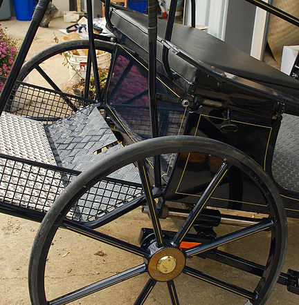
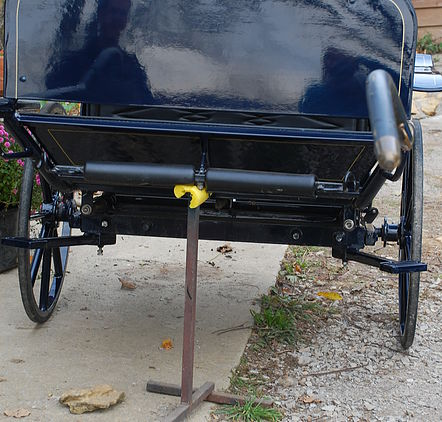
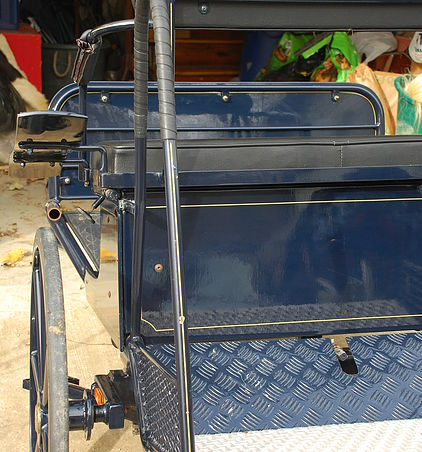
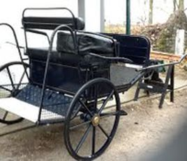
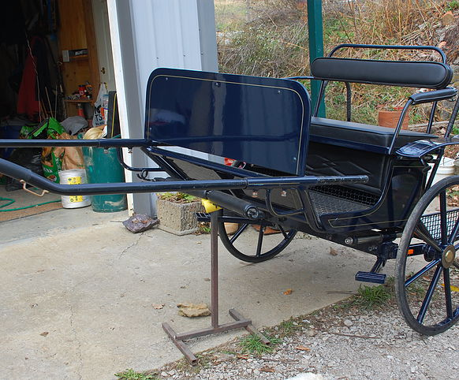
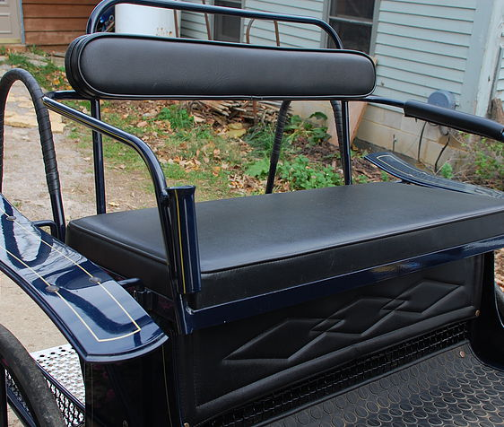

Glinkowski Combination Show Cart
- 
- 
- 
- 
- 
- 
This is a combination marathon/pleasure cart, of cob size. The color is a gorgeous dark royal blue with gold pinstriping. It has brass hardware and rubber tires. It has adjustable balance, so you can move the position of the cart, depending on weight and number of passengers, to minimize weight on the horse's back. Note steel bar under seat and above wheel. The handle to adjust the balance is behind the seat at the bottom and has a removable handle.
It's made for a large pony or stocky small horse, like a Fjord or Haflinger. Perfect for a drafty pony for combined driving events or just driving for pleasure or showing at home.
The cart is in beautiful condition. The Navigator's step in the back is removeable. Comes with driver's wedge (shown in bottom corner photo) with upholstered top and vinyl rain cover, straps on to bench seat. Note steps in front of the wheels to easily get into the cart, adjustable and removeable shafts and front solid dash. Box under removeable seat for spares. Cart fits easily in a standard pickup truck.
have never used this cart. It was sold to me as a pony cart for small ponies, and it is not. Always kept garaged. Paint like new except on adjustable shaft ends. Curved shaft tips. Beautifully made cart in ready to show condition. (You need to polish the brass!) The cart is presently just north of Lexington, Kentucky.
Max shaft length 80", shaft width 40" (somewhat adjustable due to curved shaft ends), wheels are 29.5" diameter, wheel width 48.5"
$3,000. Delivery available.
Call 859-420-5246 or email kokovoko1@gmail.com.